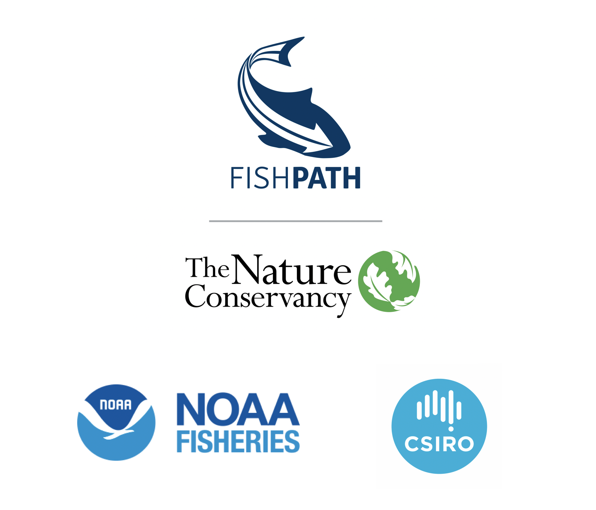

FishPath Tool User Guide
Introduction
Motivation for Developing the FishPath Tool and FishPath Process
FishPath Tool Overview
Intended Audience and Use of the FishPath Tool
Starting the FishPath Tool
Welcome Page
Creating a FishPath Account
FishPath Tool Dashboard
Adding a New Fishery
FishPath Tool Questionnaire
Anatomy of a FishPath Tool Question
Criteria and Caveat Questions
Subjective Questions
Completing the Questionnaire
FishPath Tool Conceptual Framework
FishPath Tool: Framework Overview of the 3 Sections
FishPath Tool Interactive Results Page
Interactive Results Table
Table Structure
Full Option Details
Show Hidden Options and Sort Options
Bookmarked Questions and Influential Answers
Bookmarked Questions
Influential Answers
See All Answers
Results Narrowing Process
Actions to Share Results and Edit Fishery Info
View-Only Mode (Shared Fishery)
Appendix
FishPath Tool Frequently Asked Questions (FAQs)
FishPath Tool Terms of Service
Glossary
Absolute Abundance
B0 (Unfished Biomass)
Bias
Biological Overfishing
Boom and Bust Population Cycle
Bycatch
Capital Stuffing
Carrying Capacity (K)
Catch-Per-Unit-Effort (CPUE)
Decision Rule
Determinate Growth
Economic Overfishing
Ecosystem Overfishing
Effort Creep
Equilibrium
Fecundity
Fishery
Fishery-Dependent Data
Fishery-Independent Data
Fishery Effort
Fishing Mortality (F)
Growth Overfishing
Harvest Control Rule (HCR)
Harvest Strategy
Illegal, unregulated, and unreported (IUU) Fishing
Indicators
Intrinsic growth rate (r)
Latent effort
Length-weight relationship
Limit reference point
Management Strategy
Maturity ogive
Maximum sustainable yield (MSY)
Metapopulation
Multispecies fishery
Natural mortality (M)
No-take reserve
Nursery
Open Access
Overfished
Overfishing
Periodic strategist
Recruitment
Recruitment Overfishing
Reference Points
Relative abundance
Removals
Sector/Fleet
Selectivity
Sessile
Steepness
Stock
Stock Abundance
Stock Status
Target reference point
Transboundary
Trigger reference point
Vea este guía de usuario en español
Published with bookdown
FishPath Tool User Guide
FishPath Tool User Guide
The Nature Conservancy
Last updated: July 20, 2022
